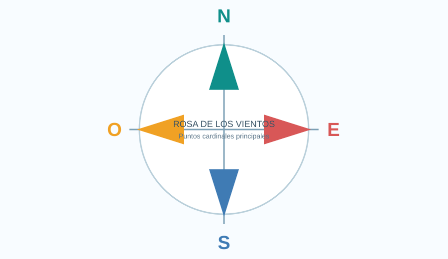
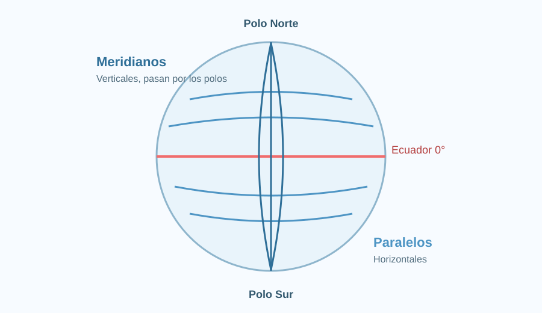

Prueba de Historia y Geografía - 3° Básico
Unidad 1: cuadrículas, planos, planisferio, puntos cardinales, paralelos y meridianos.

Rosa de los vientos: Norte, Sur, Este y Oeste.

Paralelos (horizontales) y meridianos (verticales).